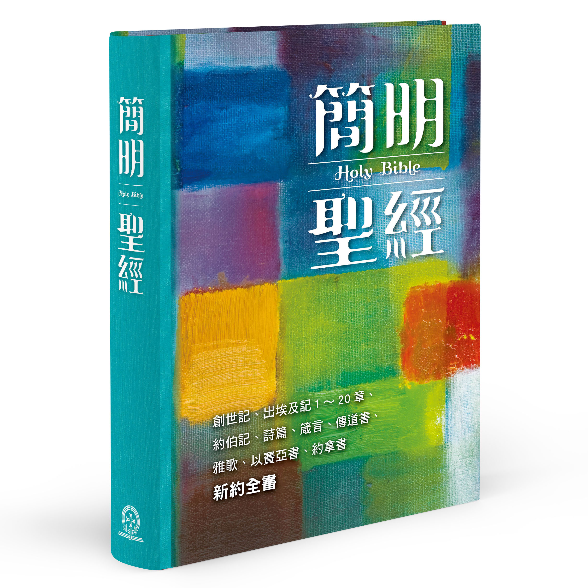

|  |
新譯簡明聖經
|
ABOUT THIS BIBLE
Jian Ming Sheng Jing=The Holy Bible: A Dynamic Chinese Translation
Many Chinese speakers indicated that the traditional Chinese Bible, Union Version, 1919, was very hard to understand. Now there is a new version, Jian Ming Sheng Jing 簡明聖經 (hereafter JMSJ), which both adults and children enjoy reading.
The Union Version is rendered from the Revised Version, 1885. In that version, the translators attempted to render each word in the original text into Chinese, and preserve the original word order and sentence structure. As a result, many sentences are like strings of unrelated words. People recognize each word, but cannot grasp the meaning of the sentences. JMSJ is translated from The New American Standard Bible, 1977 and The Holy Bible, the New International Version, 1984. The translation has been checked against many English as well as Chinese versions to safeguard against any discrepancy from the original. The translation process was to first get a thorough understanding of the passage, and then restate in simple and easy to understand Chinese the passage’s events, ideas, and truth according to the Chinese sentence structure, thought pattern, and cultural background. Therefore it is very easy to understand. Readers’ responses attest this fact. For example:
Many theological seminary professors told us that they considered JMSJ very well translated and easy to understand; therefore, they encouraged students to read it. A brother wrote us, “When Dr. Daniel Chen, President of Holy Light Theological Seminary, was here in New Haven last year [2009], I studied the Bible with him. He introduced us to JMSJ, and it helped me so much. I’d like to take it to China to help the brothers/sisters there…” A mother in south Taiwan used to have her eight-year boy watch TV on Saturday before lunch. Then she got JMSJ and started reading it together with him. When the lunch time came, she said, “Let’s put the Bible away and have lunch.” But her boy responded, “No, Mom. I want to continue reading it.”
Another brother told us that he had been the senior scientist of an American company. Then he retired and went to teach at Shanghai, China. During that time, many people gave him Bibles of the Union Version and invited him to church. He tried to read the Bible, but couldn’t understand it. Therefore he didn’t go to church. Later a professor from the U.S. gave him a JMSJ. He found it very easy to understand. So he kept reading it, and also started going to church. Very soon he accepted Jesus Christ as his Savior.
Rev. Dr. Stephen Tong 唐崇榮牧師, a well-known evangelist，invited us to distribute JMSJ at Huaien Tang Church, Taipei, where he was giving a series of lectures on the Bible from March to June 2007.
Hong Yu Chen, M.D, a deacon at Columbia Chinese Baptist Church, Maryland, wrote us, “I’ve been searching for a new Chinese translation for the Bible for a long time. I learned about your translation through the new version of Chinese Treasures by the Digital Bible Society. The English speaking Christians are blessed by various translations available to them. I think the Chinese only speaking Christians are very much handicapped by the old translation. Some other attempts have not been too successful, in my opinion. I’m happy you are willing and ‘brave’ enough to think ‘outside the box.’ So your new translation is much more readable…”
May this Bible help Chinese-speaking Christians better understand God’s Word and grow to bring Him glory. And may this Bible lead many Chinese speakers to the Lord!
《簡明聖經》的特點
好讀易懂，大人和小孩都喜歡讀
很多人埋怨，華人教會使用的《和合本聖經》很難懂，因此我們推出一部好讀易懂的《簡明聖經》。 《和合本聖經》是由1885年出版的《英文修訂本聖經》(Revised Version)，一個字、 一個字，一個句子、一個句子翻譯過來，盡量保持原來詞語的次序和句子的結構。這樣翻譯出來的句子，往往令讀者覺得好像由許多不相干的字串在一起，每個字都認識，卻不知道全句的意思。
《簡明聖經》是以英文1977年出版的《新美國標準本聖經》(New American Standard Bible) 及 1984年出版的《新國際版聖經》(The Holy Bible, New International Version) 為基礎，翻譯出來之後，再和其他所有中、英文聖經對照，加以修改，使它和聖經的原意相吻合。而且，我們翻譯每段經文之前，都先對它以及它和前後經文的關系，求得全面的了解，然後把其中所敘述的事情、所描寫的情節、所教導的真理、以及所使用的語氣和節奏，參照華人的文化背景、思維方式、以及語言習慣，用簡單、容易明白的中文表達出來。因此這部聖經大人和小孩都覺得好懂。讀者的反應可以做證。例如： 許多神學院的教授告訴我們，他們仔細研讀《簡明聖經》，和原文對照，認爲翻譯得準確可靠，而且好讀易懂，因此鼓勵他們的學生閲讀。
一位弟兄來信說，“謝謝你們翻譯的《簡明聖經》。去 [2009] 年台灣 聖光神學院的陳院長在 New Haven的時候，我有機會跟他學習聖經，他把《簡明聖經》介紹給我們。這本聖經很容易懂，對我幫助很大。我想也拿到中國去幫助那裏的弟兄姐妹…”
一位科羅拉多的姐妹來信說，“我們一家現在每天晚飯後一起讀《簡明聖經》。我11歲和8歲的孩子都很喜歡。這幾天我們在讀創世記18章。你們生動的譯文把聖經的人物描繪得活生活現，給我們全家人帶來愉快的讀經時間…”
一位弟兄親口告訴我們，他原來是一個美國公司的科學家，退休以後到上海教書。那時有許多人給 他 《和合本聖經》，並且請他上教會。他屢次要讀那本聖經，但讀不懂，因此也沒上教會。後來一位教授給他一本《簡明聖經》，他一讀就懂，於是一直讀下去，也開始上教會，不久就信主了。
唐崇榮牧師2007年3月 - 6月，在臺北懷恩堂主持聖經講座時，還讓我們在那裏展售《簡明聖經》。
願這本聖經幫助華人基督徒真正了解主的話語，照著實行，給他帶來榮耀。更願這本聖經帶領許多華人信主，獲得他的救恩。
凸桑中文聖經協會
蕭慶松
網址：tucsonchinesebible.org (有繁體字和簡體字版；也有朗讀版)
電話：520-293-8683
電郵：tucsonchinesebible@yahoo.com
通訊處：Tucson Chinese Bible Society
627 NE 22nd Ave
Canby, OR 97013
歡迎光臨凸桑中文聖經協會網站。本協會是土桑華人基督教會事工之一，致力於翻譯及推廣中文聖經。
Thank you for visiting the official
website of Tucson Chinese Bible Society.
As a ministry of Tucson Chinese Christian Church, we
are dedicated to the Chinese translation and distribution
of The Holy Bible.
《簡明聖經》於二OO六年七月首次出版，很快就被索取一空。次年一月增印， 也很快就又沒書了。
感謝上帝！他使這本聖經廣受喜愛。有神學教授告訴我們，他們仔細研讀、對照過裏面的譯文，認爲翻譯得準確可靠，所以要我們趕快繼續翻譯舊約。許多人對我們說，他們以前一拿起聖經，就打瞌睡，但現在拿到這本聖經，卻愛不釋手。還有許多人拿這本聖經給還沒信主的家人、親戚、朋友閲讀，結果他們不久就信主了；也有父母親跟小孩子一起讀這本聖經，讀到要吃飯的時候，對孩子說：「我們停下來吃飯吧！以後再讀。」孩子卻説：「不！我要繼續讀！」另外，有人在編寫聖經導讀的時候，採用這本聖經的譯文；有人在寫書解釋聖經預言的時候，用這本聖經裏面 <啓示錄> 的譯文為依據；許多人在教 <羅馬書> 的時候，用這本書的譯文當教材；許多人用這本聖經準備講道和聖經課程；還有許多傳福音的人，親自跑來向我們說，這是一本他們一直在尋找，真正可以用來和廣大群衆分享福音的聖經！更有一個教會一次就要向我們訂五百本，只是那時我們已經沒有那麽多了。
《感謝主！爲了幫助我們滿足讀者的需求，也爲了讓我們能夠專心譯完舊約全書，道聲出版社 立刻熱誠地和我們簽下契約，接過本書的出版和發行工作，及時為我們推出這個新版，並且增加簡體字本，以便更多的人可以閲讀，同享福音的好處。
原來用希伯來文和希臘文所寫的聖經，包括舊約三十九卷、新約二十七 卷。但許多人在研讀聖經時，由於時間有限，讀完舊約第一卷 <創世記> 和第二卷 <出埃及記> 的一到二十章 (談到「十誡」) 之後，就進入新約，因此《簡明聖經》先出版這些部分，以滿足衆多讀者的需要。其他舊約書卷，以後再繼續增補。
《簡明聖經》是以英文版一九八四年發行的 《新國際版聖經》 (The Holy Bible, New International Version) 和一九七七年發行的 《新美國標準本聖經》 (New American Standard Bible) 為基礎，譯出之後，再和其他所有中、英文聖經對照，加以修改，力求正確。
《簡明聖經》是依照語言學的原理翻譯的。我們翻譯每段經文，都先對它以及它和前後經文的關係，求得全面的了解，然後把其中所敘述的事情、所描寫的情節、所教導的真理、以及所使用的語氣和節奏，參照中國人的文化背景、思維方式、和語言習慣，用簡單、容易明白的中文，表達出來。
我們對經文的背景也加以仔細的研究。例如，有些中文聖經的譯文說，《路加福音》16章裏面的那個管家，削減債戶欠他主人的債額，取得債戶對他自己的好感，因此獲得主耶穌的稱讚。也就是說他利用主人的錢財，為自己謀取好處，因此贏得主耶穌的贊許。然而這是很可懷疑的。主耶穌怎麽會教我們慷他人之慨呢？所以《簡明聖經》以括弧引用研究聖經的論文說，根據主耶穌當時的猶太人風俗，管家替主人放貸是可以收取佣金的, 而這個故事中的管家為債戶削減的債額是他自己的佣金，並不是主人的錢財；所以他是犧牲自己的利益，贏得債戶對他的歡喜，才得到主耶穌的稱讚的。
《簡明聖經》的翻譯，也遵照以下幾個原則：
|
|
|
|
|
|
|
|
|
聖經是上帝藉著先知和使徒所寫的，裡面的經文完美無缺。然而，要把它翻譯成爲另外一種語言，難免有不夠完善的地方。所以我們在翻譯的時候，一直祈求上帝的引導和從他而來的智慧。
讀者對目前這本《簡明聖經》的熱謝反應，給了我們很大的鼓勵。我們祈求上帝繼續賜給我們智慧和力量，讓我們能夠譯完舊約全書。我們計劃每次完成一部份經卷譯文，就放到 www.tucsonchinesebible.org 網頁上，供大家閲讀，希望大家繼續向我們提出建設性的批評和指正，以便進一步編修，將來全書翻譯完成的時候，再以書籍的形式出版。
願一切榮耀、頌讚都歸上帝！
出版消息：《簡明聖經》已於2021年11月由臺北道聲出版社推出第四版，内容包括 <創世記>，<
出埃及記> 1-20章，<約伯紀>，<詩篇>，<箴言>，<傳道書>，<雅歌>， <以賽亞書>， <約拿書
>， 及 <新約全書>。需要者可用「訂購」(Order) 欄中的網路或電話洽購。
經文朗讀：《簡明聖經》朗讀版 <創世記>，<出埃及記> 1-20章，<詩篇>，<箴言>， <約拿書
>， 及 <新約全書> 已經全部錄製完畢。讀者可以上網使用。
電子書 (EPUB):適合在手機, 平板, 及電腦閱讀。可到 讀墨網站下載。
《簡明聖經》的翻譯和見證
講員:蕭慶松 (《簡明聖經》譯者)
( 二OO六年十二月和臺灣中部地區教會牧師分享之講詞)
大家平安。今天能和大家見面，很高興。尤其高興的 是諸位都在傳講主的真理，我們可以互相學習、勉勵。
主的真理寫在聖經裏面。大家都知道，這聖經翻譯成
中文，有和合本、中文現代譯本、新譯本等等。今年七月我們又出版了《簡明聖經》。
聽説諸位有興趣知道有關《簡明聖經》的事，所以我 現在就來跟大家分享。
看過《簡明聖經》的人都說它的經文好讀好懂。這個
見解是不是可信，現在我用一些經節做例子，把《和合本》、《新譯本》和《簡明聖經》的經文對照著念出來，給大家聼聼看。
馬太福音二十章二 十五、二十六節：
羅馬書二章十二節：
羅馬書五章二十節：
羅馬書十一章二十 九節：
羅馬書十五章一節：
歌羅西書四章五、六兩節：
希伯來書十一章一節：
雅各書三章一、二 兩節：
彼得前書二章二十 四節：
約翰一書二章十五節：
約翰一書三章十八 節：
現
在我來報告有關翻譯 《簡明聖經》的事。
一九九一年我受聖靈的感動，開始傳揚主的福音。我向美 國人 傳，也向中國人傳。向 中國人傳的時候，常聼他們抱怨中文聖經難懂。
於是我禱 告， 考慮重新翻譯一本中文 聖經。
我記得馬 太福 音七章二十八、二十九 節說, 猶太人對主耶穌的教導很覺稀奇，因為他講道的時 候，很有權威。在約翰福音七章四十六節裏面，聖殿警衛也說，從來沒有人講話像主耶穌那樣令人敬畏的。我們又可以從聖經知道， 主耶穌的聽衆當中，有許多是沒 有念過什麽書的；可是他的話卻震撼所有人的心。這當然是因為他有超凡的能力。另外一個原因是他所使用的語言是新鮮、活潑、容 易明白的。所以我認爲翻譯聖經 也應該使用容易明白的中文。
感謝主， 祂讓 我認識許多威克理夫聖 經協會的弟兄姐 妹。他們都受過嚴格的語言學訓練，是專門從事翻譯聖經工作的。他們說，許多人翻譯出來的經文不好讀不好懂，是因為他們翻譯的 時候，只是呆板地照著原文詞語 的次序和句子的結構，一個字一個字、一個句子一個句子地翻譯過來。
他們強調，如果要使翻譯出來的經文好讀易懂，一定 要先對原來的經文做全面的了解，然後把其中所敘述的事情、所教導的真理、和所使用的語氣跟節奏，參照中國人的文化背景和思維 方式，用中文的語言習慣表達出 來。
後來我發 現， 威克理夫聖經協會那些 弟兄姐妹所說的 理論，都是我在念語言學的時候，已經學過的。
我再經過一段時間的禱告，然後開始重新翻譯聖經， 把新的聖經叫做《簡明聖經》，因為是用簡單而容易明白的中文翻譯的。
我知道許多人翻譯聖經 是根據《新美國標準聖經》New American Standard Bible 和《新國際版聖經》The Holy Bible, New International Version，因為這兩個版本比較 接近原文。所以我也用這 兩個版本做基礎，翻譯出來之後，和其他所有中、英文聖經對照，確定沒有失誤，再請中英文都很好的前輩基督徒審查修改，然後加 以整理潤飾。接著，我又請非基 督徒試讀，因爲這本聖經不但要讓基督徒看得懂，更要讓非基督徒也看得懂，以便用來向他們傳福音。
我翻譯聖經，翻譯了一些之後，弟兄姐妹讀了，覺得 很好，建議把它放到電腦網頁上，讓人家閲讀。我自己不會做網頁，也沒有特意去找別人來做。但是感謝主，有一次，我們去參加一 個結婚喜宴，桌上坐的全是陌生 人。我們自我介紹之後，表示需要一個義工為《簡明聖經》做網頁。說完，馬上就有賴豊家弟兄志願幫忙。於是我每次翻譯完了一些 經文，就讓賴弟兄放到網頁上。
結果讀者的反應很好，我就繼續翻譯下去。
那時我在亞利桑納大學主持中文圖書館。爲了翻譯聖 經，我每天四點鐘就起床，先禱告，感謝主賜給我一顆順服的心，讓我又一次願意早起。我翻譯聖經到六點鐘，然後出發，七點鐘到 學校做事，四點鐘下班，回到家 裏又翻譯聖經，一直到晚上十點鈡。
後來，我覺得應該在還不太老的時候，就把自己全部 奉獻給主。於是我禱告。感謝主，我太太也同意，所以2001年我六十二嵗的時候，就從大學退休下來，全時間翻 譯聖經。
這期間我一直有骨質增生的病。我的脖子時常會僵 硬、疼痛。我看了許多醫生，吃過許多葯，也接受過幾種治療，都沒有用。我也幾次求主醫治我，但祂沒有醫治我。我想，也許主要 我像使徒保羅那樣，借著祂的力 量顯得堅強。所以有時我的脖子很痛，晚上痛得睡不着覺，我就起來，走到起居室，坐在沙發裏向主禱告，求祂除去我的疼痛。我禱 告，唱詩歌，然後主就讓我安然 地睡去，直到清晨四點鈡。主對我是憐憫的。祂常用各种辦法來鼓勵我。例如，有時候我四點鐘起來，很睏，祂就讓我去看《簡明聖 經》網頁上的統計數字，讓我知 道從半夜到那個時候，已經有多少人使用過《簡明聖經》。我知道有那麽多人在使用《簡明聖經》，就振奮起來，不再打瞌睡了。
主也讓《簡明聖經》吸 引衆多的讀者來讀，而且獲得一個基督教機構 Chinese Christian Internet Mission的重視，欣然為我代收 奉獻，支持我的翻譯事工。
讀者不斷來信。
有的說他們把《簡明聖 經》印下來給還沒信主的家人和親戚朋友朋讀。他們都很喜歡讀，一直讀到晚上一、兩點鈡，結果不 久就信主了。
有的說他們在編寫聖經導讀的時候，使用《簡明聖 經》的經文。
有的說他們在闡釋聖經預言的時候，使用《簡明聖 經》啓示錄的經文。
有的說他們使用《簡明聖經》去準備講道、主日學、 分組查經。
更有美國
歐克 拉侯馬州諾曼市 的 南歐克拉侯馬華人浸信會 覺得《簡明聖經》好讀好懂，和我聯絡，由他們出
錢，印出羅馬書五百本當樣本，讓弟兄姐妹研讀。
爲什麽大家喜歡《簡明聖經》呢？
第一、它的經文 翻譯得準確：有神學院的教授打電話 鼓勵我繼續翻譯舊約全書，因為他們仔細審閲過《簡明聖經》，發現它翻譯得很接近原文。也有宣教士告訴我，他們研讀、對照過 《簡明聖經》的經文，覺得翻譯得 很準確、可靠。
第二、它的經文好讀好懂。我和太太今年九月到十一 月在花蓮縣的鳳林鎮宣教。每天教聖經，連最小的學生，一個國小二年級的小妹妹都會念《簡明聖經》，念得很好。
第三、這本聖經遇到像「逾越節」、「五旬節」、 「安息日」、「住棚節」、「第二次死亡」之類的詞語時，都用方形括弧加上簡明的解釋。例如，啓示錄二章十一節講到「第二次死 亡」，就用方形括弧加上解釋 說：「不信主的人死後會到陰間去。主耶穌再來的時候，又會把他扔到火湖裡，這叫第二次死亡。」讀者一看就懂。
其實，我在翻譯《簡明聖經》的時候，對經文都盡量 仔細研究，以便達到完美的地步。
例如，路加福音十六章，有些中文聖經說，這章裏面 的那個管家，削減債戶欠他主人的債額，取得債戶對他自己的好感，因此獲得主耶穌的稱讚。也就是說他利用主人的錢財，為自己謀 取好處，因而贏得主耶穌的贊 許。然而這是很可懷疑的。主耶穌怎麽會教我們慷他人之慨呢？
所以我在翻譯這一章的時候，加上括弧，在裏面引用 聖經學者約瑟.腓玆邁爾 (Joseph A. Fitzmyer) 的一篇論文解釋說，根據從前猶太人的習俗，管家為 主人放貸時，可以在債額以外，加上佣金。所以耶穌所說的這個故事裡面，債戶的借據上所寫的債額實際上是包括債戶真正欠財 主的 數目和管家所加上的佣金。故事 中的管家希望將來失業的時候，債戶會幫助他，所以把原來加在他們借據上的佣金免掉了。他這樣做，是放棄自己的利益，而不是慷 主人之慨。] 他是犧牲自己的利益，贏 得債戶對他的歡喜，才得到主耶穌的稱讚的。（由於時間的限制，我不能把這裡面的一切細節都講出來，諸位如果去讀《簡明聖 經》，就會更加清楚我所講的。
另外，有些中文聖經在這章的第九節裏面，說主耶穌 稱讚這個管家用「不義」的錢財結交朋友。但事實上，主耶穌是不可能教我們使用任何不義的錢財的。爲什麽有的中文聖經說是不義 之財呢？原來那是從英文聖經的 “unrighteous wealth” 翻譯過來的。但 “unrighteous” 這個字在聖經裏有時候不是指「不義的」，而是指 「世俗的」。路加福音十六章九節裏面的 “unrighteous” 正是指「世俗的」，而不是指「不義的」。所以主耶 穌在這裡是稱讚管家用「世俗的」錢財結交朋友，而不是用「不義的」錢財結交朋友。
又如， 《使徒 行傳》十六章三十節， 監獄的警衛問保 羅和西拉說：「先生，我們該怎麼辦，才能得救呢？」保羅和西拉的回答出現於三十一節，其他的中文聖經幾乎都把它翻譯成：「當 信主耶穌，你和你全家都必得 救。」這個翻譯導致現在廣泛流傳的「一人得救，全家得救」的說法；就是：一家裡面只要有一個人信耶穌而得救，其他人不信耶 穌，也能得救。這是不對的。我們 遍讀英文版本，認為這節應該翻譯為：「信奉主耶穌，就能得救。你家裡的其他每一個人也都可以這樣做。」這個翻譯才符合主耶穌 的教導。
又如，馬 太福 音六章十二節，
和合本翻 譯 為：[免我們的債，如同 我們免了人的債。]
新譯本的翻譯也相似。這等於是我們要天父學習我們 原諒別人。事實上不是這樣。我們是在向天父禱告，請他原諒我們，因為我們已經像他教導的那樣，原諒別人了。新國際版英文聖經 說：“Forgive us our debts, as we also have forgiven our debtors.”正確的翻譯應該是：”求您原諒 我們的罪， 因為我們已經原諒了得罪我們的人。” 《簡明聖經》就是這樣翻譯的。
“As” 這個 英文字有時是“如同” 的意思，有時是 ”因為” 的意思。例如，”I’m not as rich as you are.” [我不像你那麽有錢。] I don’t have a big house, as I don’t have very much money.” [ 我沒有一個大房子，因 為我沒有很多錢。] 在目前的這個經節裏， 它應該當 “因為” 解釋。
又如，馬 太福 音十六章十九節，和合本翻譯為：”我要把天國的鑰匙給你。凡你在地上所捆綁的，在天 上也要捆綁。凡你在地上所釋放的，在天上也要釋放。”
其他中文 聖經 的翻譯也相似。這等於 是說，天上的上 帝聼我們的領導，我們在地上怎樣做，他在天上也怎樣做。這是不對的。
這節經文的意思是說，”我要賜給你天國的鑰匙[，讓你 知道 上帝的旨意]。你在地 上所禁止的，將是主[上帝]在天上已經禁止的；你在地上所准許的，將是主 [上帝]在天上已經准許的。” 所以《簡明聖經》就這 樣翻譯。
我翻譯聖 經， 翻譯完了創世記和出埃 及記1-20章，就翻譯新約全書，因為許多人認爲新約比較難 懂。也是爲了許多讀者的需要，我先把這些部份出版成書。
由 於我和太太今年九月到十一月到花蓮縣的鳳林鎮宣 教，下學期我又要到玉山神學院擔任神學英文客座教授，我們就帶了一批到花蓮去介紹給那邊的人。我們在鳳林的聖經班裏面有一位 姐妹向我們索取很多《簡明聖 經》，發給每一個家人和親戚一本。另外她總是隨身帶著幾本《簡明聖經》，遇到有需要的人，就給他一本。花蓮市的一位醫生有個 診所，又牧養一個教會。他索取 很多《簡明聖經》，發給來他診所看病和來他教會聚會的人看；又送給花蓮幾個大學的教授看，教授也要學生看，所以很多學生來索 取《簡明聖經》。
我們很希望基督徒讀到《簡明聖經》，以便對主的教導有更正確的了解，活得更接近祂的形象。我們也希望非基督徒讀到《簡明聖經》， 以便認識主，得到祂的救贖。《簡明聖經》和其他聖經經文對照舉例
《簡明聖經》好讀好懂。 底下以一些書卷章節為例，將它和其 他
聖經的經文並列出來，讓大家對照看看。《和合》代表《和合本聖經》，《新譯》代表《聖經新譯本》，《簡明》代表《簡明聖
經》。
馬太福音十章三十四節：
《和合》：「你們不要想我 來， 是叫地上太平。我來，並不是叫地上太 平，乃是叫地上動刀兵。」
《新譯》：「你們不要以為 我來 了，是要給地上帶來和平；我並沒有帶來 和平，卻帶來刀劍...」
《簡明》：「你們不要以為 我來 到世上，是要在世人之間毫無原則地調解 或折衷，使他們苟且相安無事。不，我來是要好像用一把劍將正反的兩種人切分清楚...」
馬太福音十二章三十節：
《和合》：「不與我相合 的，就 是敵我的；不同我收聚的，就是分散 的。」
《新譯》：「不站在我這一 邊的 就是反對我的，不跟我一起收聚的，就是 分散的。」
《簡明》：「不跟我同道 的，就是跟我敵對的；不和我一起收割莊稼的，就是 毀壞、拋散莊稼的 [也就是說不和我聚集、拯救靈魂的，就是驅散、毀滅靈魂的]。」
馬太福音二十章二十五、二十六節：
《和合》：「25 ... 你們知道外邦人有君王為主治理他們，有大臣 操權管束他們。26只是在 你們中間不可這樣 ... 」
《新譯》：「25 ... 你們知道各國都有元首統治他們，也有官長管 轄他們。26但你們中間卻不要這樣... 」
《簡明》：「25 ...你 們曉得，在不信上帝的人當中，君王都高高在上地統治人民，大官也對人民發號施令，26 但你們不可這樣 ... 」
馬可福音四章二十四、二十五節：
《和合》：「24你們所聽 的要 留心。你們用甚麼量器量給 人，也必用甚麼量器量 給你們，並且要多給你們。25因為有 的，還要給他。沒有的，連他所有的也要奪去。」
《新譯》：「24要留心你 們所 聽到的，你們用甚麼尺度量 給人，神也要用甚麼尺 度量給你們，並且要超過尺度給你們。25因為那 有的，還要給他；那沒有的，就算他有甚麼也要拿去 。」
《簡明》：「24你們對於 福音 要敞開心扉認真聽、仔細琢 磨。你們怎樣聽、怎樣 琢磨，上帝就讓你們怎樣明白，並且 要多讓你們明白。25凡是有的，要再 給他；沒有的，連他原來有的，也要拿走。 [這就是說，對於福音敞開心扉認真 聽、仔細琢磨，真正明白、接受，照著去實行，使自己的生命結出美好的果實來，並且把福音傳給別人的，上帝會讓他聽到 更多、明白更多的的福音；對於福音不願 敞開心扉認真聽、不願琢磨的，連他原來聽到的一點福音，上帝也要拿走，讓他完全忘記]。」
馬可福音十章十五節：
《和合》：「我實在告訴你 們， 凡要承受神國的，若不像小孩子，斷不能 進去。」
《新譯》：「我實在告訴你 們， 凡是不像小孩子一樣接受神國的，絕對不 能進去。」
《簡明》：「我實在告訴你 們，凡是不像小孩子這樣 [單純地] 接受上帝國度的，都進不了那國度。」
路加福音六章二十四節：
《和合》：「但你們富足的 人有 禍了，因為你們受過你們的安慰。」
《新譯》：「然而你們富足 的人 有禍了，因為你們已經得到了你們的安 慰。」
《簡明》：「你們 [不傳福音，只是享受] 富足的人要遭殃了，因為你們得到了舒適的生活 [，卻不會得到上帝的祝福]。」
路加福音七章三十五節：
《和合》：「但智慧之子， 都以 智慧為是。」
《新譯》：「但神的智慧， 藉著 他的兒女就證實是公義的了。」
《簡明》：「但是所有按照 上帝 的智慧生活的人，都顯示那智慧是正確 的。」
路加福音十七章一、二節：
《和合》：「1絆倒人的事 是免 不了的。但那絆倒人的有禍 了。2就是把磨石拴在這人的頸項上，丟在海裡，還強如他把這小子裡 的一個絆倒了。」
《新譯》：「1使人犯罪的 事是 免不了的，但那使人犯罪的 人有禍了！2就算拿一塊大磨石拴在他的頸項上，把他沈在深海裡，比他使這 小子中的一個犯罪還好。」
《簡明》：「1使人犯罪的 事一 定會有，但做這種事的人要 遭殃了。2他就是使這當中的一個孩子犯罪，將來也會受到嚴厲的懲罰。所以他不如 在還沒有做這種事之前，就叫人給他 在脖子上綁一塊大石 頭，把他丟到大海裡，免得將來受到懲罰。」
路加福音二十二章三十一、三十二 節：
《和合》：「31西門、西 門， 撒但想要得著你們，好篩你們，像篩麥 子一樣。32但我已經為你祈求，叫你不至於失了信心。你回頭以後，要堅固 你的弟兄。」
《新譯》：「31 西門、西門， 撒但設法要得著你們，好篩你們像篩麥 子一樣；32但我已經為你祈求，叫你的信心不至失掉。你回頭的時候，要堅 固你的弟兄。」
《簡明》：「31西門，西 門， 撒但求我把你們交給他，讓他可以像篩麥子一樣，把你們當中信心不堅的篩掉。32不過，西門， 我已經向上帝禱告過，求他不要讓你 失掉信心。你回頭以後，要堅定弟兄的信心。」
約翰福音三章五節：
《和合》：「... 人若不是從水和聖靈生的，就不能進神的國。」
《新譯》：「... 人若不是從水和聖靈生的，就不能進神的國。」
《簡明》：「... 人如果沒有藉水和聖靈重生 [也就是說，人如果沒有認罪悔改，接受耶穌，讓自己的罪得到赦免，好像被水洗淨那樣，並且從聖靈獲得新生命和新力 量]，他絕對進不了上帝的國度。」
約翰福音九章三十九節：
《和合》：「我為審判到這 世上 來，叫不能看見的，可以看見。能看見 的，反瞎了眼。」
《新譯》：「我到這世上來 是為 了審判，使那看不見的能夠看見，能看見 的反而成了瞎眼的。」
《簡明》：「我為審判而到 世上來，使瞎眼的能看見，能看見的變成瞎眼 [也就是說，我到世上來，是要判斷世人 － 看哪些人看得見真理，哪些人看不見真理。那些承認自己看不見真理的人，我要醫治他們，使他們看得見。那些看不見真 理，卻假裝看得見的人，我要揭發他們瞎眼 的真相]。」
使徒行傳七章五十一節：
《和合》：「你們這硬著頸 項， 心與耳未受割禮的人，常時抗拒聖靈。你 們的祖宗怎樣，你們也怎樣。」
《新譯》：「你們頸項剛 硬、心 和耳都未受割禮的人哪！你們時常抗拒聖 靈，你們的祖宗怎樣，你們也怎樣。」
《簡明》：「你們這些頑固 的人，就像沒有受過割禮的外族人那樣，心裡嚮往 假神，耳朵不聽上帝的真理。你們就像你們的祖先那樣，總是抗拒聖靈。」
使徒行傳十六章三十一節：
《和合》：「...當信主 耶 穌，你和你一家都必得救。」
《新譯》：「...當信主 耶 穌，你和你一家人都必定得救。」
《簡明》：「...信奉主 耶 穌，就能得救。你家裡的其他每一個人也都可以這樣 做。」
使徒行傳二十章三十二 節：
《和合》：「如今我把你們 交託 上帝，和他恩惠的道。這道能建立你們， 叫你們和一切成聖的人同得基業。」
《新譯》：「現在我把你們 交託 給神和他恩惠的道；這道能建立你們，也 能在所有成聖的人中賜基業給你們。。」
《簡明》：「現在我把你們 交託 給上帝和那傳揚他恩惠的福音。那福音能 使你們得到造就，並且和一切成聖的人一同獲得上帝為他的百姓所預備的福氣。」
羅馬書二章二十九節：
《和合》：「惟有裡面作 的，才 是真猶太人。真割禮也是 心裡的，在乎靈不在乎儀文。這人的稱讚，不是從人來的，乃是從神來的。」
《新譯》：「惟有在內心作 猶太 人 的才是猶太人。 割禮也是心裡的，是靠著聖靈而不是靠著儀文。這樣的人所受的稱讚，不是從人來的，而是從神來的。」
《簡明》：「一個人必須是 內心順服上帝的猶太人，才能算是猶 太人。割禮在於內心 [，不在於肉體]；是由於聖靈的感動，不是為了符合成文法律的要求。這樣的人得到的讚美，不是來自世人，而是來自上 帝。」
羅馬書五章二十節：
《和合》：「律法本是外添 的， 叫過犯顯多。」
《新譯》：「律法的出現， 是要 叫過犯增多。」
《簡明》：「摩西法 律的頒布，原來是為了使人明白自己的 罪是多麼地多。」
羅馬書八章三、四節：
《和合》：「3律法既因肉 體軟 弱，有所不能行的，上帝就 差遣自己的兒子，成 為罪身的形狀，作了贖罪祭，在肉體中定了罪案，4使律法的義，成就在我們這 不隨從肉體，只隨從聖靈的人身 上。」
《新譯》：「3律法因肉體 的軟 弱所做不到的，上帝做到 了：他差遣自己的兒子 成為罪身的樣式，為了除掉罪，就在肉體中把罪判決了，4使 律法所要求的義，可以在我們這些不隨從肉體而隨從聖靈去行的人身上實現出來。」
《簡明》：「3原來人因為 有罪 惡的本性，所以很軟弱，經 不起罪的誘惑，因此摩 西法律雖然告訴我們甚麼事不可做，卻無法使我們不做，無法使我們不犯罪。 但是摩西法律所無法 做到的，上帝做到了。他派自己完全聖潔 的兒子耶穌基督，帶著罪人的形象來到世上，當做替人贖罪的祭品。這樣，上帝就把那控制人的罪所具有的力量除掉，4使人因此不 照罪惡的本性生活，而照聖靈生活，以便達到摩 西法 律那叫人保持正直而不犯的要求。」
羅馬書十章四節：
《和合》：「律法的總結就 是基 督，使凡信他的都得著義。」
《新譯》：「因為律法的終 極就 是基督，使所有信的人都得著義。」
《簡明》：「[其實摩西法 律只是要準備人們的心，以便等待耶穌基督來臨。] 基督代表摩西法律所要達到的最高準則。他來臨的時 候，大家就不必再靠遵守摩西法 律被上帝看成正直清白；所有的人只要信他，就可以被上帝看成正直清白。」
羅馬書十一章二十九節：
《和合》：「因為神的恩賜 和選 召是沒有後悔的。」
《新譯》：「因為神的恩賜 和呼 召是決不會反悔的。」
《簡明》：「因為上帝絕不 收回 自己所應許的恩惠，不拋棄自己所呼召的 人。」
羅馬書十三章八節：
《和合》：「凡事都不可虧 欠 人，惟有彼此相愛，要常以為虧欠。因為愛 人的就完全了律法。」
《新譯》：「不要欠人的 債；但 在彼此相愛的事上，要覺得欠了人的債。 愛別人的，就成全了律法。。」
《簡明》：「不要欠別人的 債； 只是在彼此相愛這方面，要覺得總是做得 不夠，總是虧欠人家似的，要繼續償還下去。愛別人就是實踐摩西法律的要求。」
羅馬書十三章十節：
《和合》：「愛是不加害與 人 的，所以愛就完全了律法。」
《新譯》：「愛是不加害於 人 的，所以愛是成全律法的。」
《簡明》：「有愛心，就不 會傷 害別人。所以愛是摩西法 律的實踐。」
羅馬書十三章十四節：
《和合》：「總要披戴主耶 穌基 督，不要為肉體安排，去放縱私慾。」
《新譯》：「總要披戴主耶 穌基 督，不要為肉體安排，去放縱私慾。」
《簡明》：「在生活上各方 面都 要模仿主耶穌基督的做法，好像披上了主耶 穌基督的形象，讓人家看到我們，就像看到他一樣。不可想要滿足你們那邪惡本性的慾望。」
羅馬書十五章一節：
《和合》：「我們堅固的 人，應 該擔代不堅固人的軟弱，不求自己的喜 悅。」
《新譯》：「我們堅強的 人，應 該擔當不堅強的人的軟弱，不應該求自己 的喜悅。」
《簡明》：「我們信心堅強 的 人，對信心薄弱的人，所做不到的事情，應 該容忍，不要只圖自己的高興。」
哥林多前書二章十四節：
《和合》：「然而屬血氣的 人不 領會上帝聖靈的事，反倒以為愚拙。並且 不能知道，因為這些事惟有屬靈的人才能看透。」
《新譯》：「然而屬血氣的 人不 接受神的靈的事，因為他以為是愚笨的； 而且他也不能夠明白，因為這些事，要有屬靈的眼光才能領悟。」
《簡明》：「沒有聖靈的人 不明白聖靈的事，反而以為愚蠢。他們不明白，因 為這種事只有藉著聖靈才能理解。」
哥林多前書三章十三節：
《和合》：「各人的工程必 然顯 露，因為那日要將他表明出來，有火發 現。這火要試驗各人的工程怎樣。」
《新譯》：「各人的工程將 來必 要顯露，因為那日必把它顯明出來。有火 要把它顯露出來，那火要考驗各人的工程是怎樣的。」
《簡明》：「他們的工程品 質如何，將來都會知道；因為主耶穌基督再來的那 一天，會把一切真相揭露出來。那時，各人的工程都要經過烈火的考驗，顯出真正的品質來。」
哥林多前書六章十二節：
《和合》：「凡事我都可 行，但 不都有益處。凡事我都可行，但無論哪一 件，我總不受他的轄制。」
《新譯》：「甚麼事我都可 以 作，但不是都有益處。甚麼事我都可以作， 但我不受任何事的轄制。」
《簡明》：「你們有人說： 『上帝沒有說不可以做的事，我都可以做。』但 這樣的事對你們不是都有益處。即使『上帝沒有說不可以做的事，我都可以做』，然而有些事我如果去做，就會變成它的奴隸， 擺脫不了；我即使要停止，它也不讓 我停止。這樣的事我絕對不做，免得受到它的控制。」
哥林多前書七章三～五節：
《和合》：「3丈夫當用合 宜之 分待妻子，妻子待丈夫也要 如此。4妻子沒有權柄主張自己的身子，乃在丈夫。丈夫也沒有權柄主張 自己的身子，乃在妻子。5夫 妻不可 彼此虧負，除非兩相情願，暫時分房，為要專心禱告方 可，以後仍要同房，免得撒但趁著你們情不自盡，引誘你們。」
《新譯》：「3丈夫對妻子 應該 盡他的本分，妻子對丈夫也 應該這樣。4妻子對自己的身體沒有主權，權在丈夫；照樣，丈夫對自己的身 體也沒有主權，權在妻子。5夫妻不可 彼此虧負，除非為了要專心禱告，雙方才可同意暫時分 房。以後仍要同房，免得撒但趁著你們情不自盡的時候誘惑你們。」
《簡明》：「3丈夫對妻子 應該 履行婚姻上做丈夫的義務，妻子對丈夫也應該履行婚姻上做妻子的義務。4妻子的身體不只屬於她自己，也屬於她丈夫。同 樣地，丈夫的身體不只屬於他自己，也屬 於他妻子。5夫妻除非為了專心禱告，雙方同意，才可暫時分房，否則不可拒絕和對方同房。而且分房的期間一過，應該馬 上恢復同房，以免撒但趁著你們不能自我 控制，而誘惑你們。」
哥林多前書十三章一節：
《和合》：「我若能說萬人 的方 言，並天使的話語，卻沒有愛，我就成了 鳴的鑼，響的鈸一般。」
《新譯》：「我若能說世人 和天 使的方言，卻沒有愛，我就成了鳴的鑼， 響的鈸一樣。」
《簡明》：「我即使會說人 類甚至天使的各種語言，卻沒有愛，我就只像吵鬧 的鑼和刺耳的鈸，發出沒有意義的噪音。」
哥林多後書一章二十一、二十二節：
《和合》：「21那在基督 裡堅 固我們和你們，並且膏我們 的就是上帝。22他又用印印了我們，並賜聖靈在我們心裡作憑據。」
《新譯》：「21那在基督 裡堅 定我們和你們，又膏抹我們 的，就是神。22他在我們身上蓋了印，就是賜聖靈在我們心裡作憑據。」
《簡明》：「21如今使我 們和 你們藉著基督站立得穩的是 上帝；他按立我們，22好像在我們身上蓋了印記，表明我們是屬於他的；他也把自 己的聖靈放在我們心中，好像做為贖 買我們的訂金，保證他將來一定 會為我們付清其餘的贖款，完成救贖我們的一切手續，使我們得到完全的救贖。」
哥林多後書二章十四節：
《和合》：「感謝上帝，常 帥領 我們在基督裡誇勝，並藉著我們在各處顯 揚那因認識基督而有的香氣。」
《新譯》：「感謝神，他常 常在 基督裡，使我們這些作俘虜的，列在凱旋 的隊伍當中，又藉著我們在各地散播香氣，就是使人認識基督。」
《簡明》：「感謝上帝！他 總是藉著基督，帶領我們走在慶祝勝利的遊行行 列之中。不管我們走到哪裡，他總是使用我們，向人們傳播有關基督的知識，把這知識 － 也就是福音 － 像香氣一般，撒遍各地。」
哥林多後書三章六節：
《和合》：「 他叫我們能承當這新約的執事。不是憑著字句，乃是憑著精意。 因為那字句叫人死，精意是叫人活。 」
《新譯》：「 他使我們有資格作新約的僕役，這新約不是從儀文來的，而是從 聖靈來的；因為儀文會使人死，而聖靈卻使人活。 」
《簡明》：「他賜給我們能 力，讓我們做新約的傳道人，向人們宣講他和他 的百姓所訂的新約。這新約不是來自摩 西法律，而是來自聖靈。摩西法律給罪可 乘的機會，慫恿 我們去做那法律所禁止的事，使我們 犯罪，和上帝隔離，我們的靈因而死亡。聖靈不然：他賜給我們新的生命。」
哥林多後書六章十四節：
《和合》：「你們和不信的 原不 相配，不要同負一軛。義和不義有甚麼相 交呢？光明和黑暗有甚麼相通呢？」
《新譯》：「你們和不信的 人不 可共負一軛。義和不法有甚麼相同呢？光 明和黑暗怎能相通呢？」
《簡明》：「你們不要和不 信的 人同負一軛，因為他們和你們不相配。正 直和邪惡有甚麼相同之點呢？光明和黑暗怎能共存呢？」
加拉太書二章十九節：
《和合》：「我因律法，就 向律 法死了，叫我可以向上帝活著。」
《新譯》：「我藉著律法已 經向 律法死了，使我可以向神活著。」
《簡明》：「因為透過摩 西法 律，我知道人都會犯罪，無法靠 著遵守那法律而被上帝看成正直清白的人，所以我就放棄這個途徑，轉而依靠對基督的信心。我信了基督，就和他一起死在十字 架上。對法律來說，我好像已經死 亡，對它沒有反應了。然後我又和復活的基督一起活起來，從此為上帝而活。」
加拉太書三章十節：
《和合》：「凡以行律法為 本 的，都是被咒詛的。因為經上記著：『凡不 常照律法書上所記一切之事去行的，就被咒詛。』」
《新譯》：「凡是靠行律法 稱義 的，都在咒詛之下，因為經上記著：『凡 不常常照著律法書上所寫的一切去行的，就被咒詛。』」
《簡明》：「所有想靠遵守 摩 西法律而獲得上帝歡喜的人，都 會受到詛咒，因為聖經說：『凡不樣樣事情都遵照摩西法律書中的規定去做的人，都要受到上帝的 詛咒』[事 實上，人人都會犯錯，即使想要事事都遵照那法律的規定去做，也辦不到。任何時候犯了一條規定，都會受到上帝的詛咒]。」
加拉太書四章十九節：
《和合》：「我小子啊，我 為你 們再受生產之苦，直等到基督成形在你們 心裡。」
《新譯》：「我的孩子們， 為了 你們我再受生產的痛苦，直到基督在你們 裡面成形。」
《簡明》：「親愛的孩子 們，我又在為你們忍受生孩子似的那種痛苦了。這 痛苦要等到你們的生命顯出基督的樣式，才會停止。」
以弗所書四章二十六、二十七節：
《和合》：「26生氣卻不 要犯 罪。不可含怒到日落。27也不可給魔鬼留地步。」
《新譯》：「26生氣卻不 要犯 罪；含怒不可到日落。27不可給魔鬼留地步。」
《簡明》：「26生氣的時 候， 不可犯罪；也不 可生氣到日落，27免得讓魔鬼抓到機會，引誘你們去犯罪。」
以弗所書四章三十節：
《和合》：「不要叫神的聖 靈擔 憂。你們原是受了他的印記，等候得贖的 日子來到。」
《新譯》：「不要讓神的聖 靈憂 傷，因為你們受了他的印記，等候得贖的 日子。」
《簡明》：「不要使上帝的 聖靈悲傷，因為他是上帝賜給你們的，好像他蓋 在你們身上的印記，表示他已經繳付了贖買你們的訂金，以便基督再來的時候，付清其餘的贖款，把你們完全贖買回來，使你們 得到完全的自由。」
腓立比書二章十七節：
《和合》：「我以你們的信 心為 供獻的祭物。我若被澆奠在其上，也是喜 樂...」
《新譯》：「即使把我澆奠 在你 們信心的祭物和供奉上，我也喜樂...」
《簡明》：「我幫助了你 們，使你們的信心長進，將那成果當做獻給上帝的 祭品。現在我即使必須犧牲生命，讓自己的血被當做奠祭的酒，澆在那祭品上面，我也會喜樂...」
腓立比書三章七節：
《和合》：「只是我先前以 為與 我有益的，我現在因基督都當作有損 的。」
《新譯》：「只是我先前以 為與 我有益的，我現在因基督都當作有損 的。」
《簡明》：「但經歷了基督 所賜給我的恩惠之後，上面那些我從前認為重要 的事，現在我覺得一點價值也沒有了。」
歌羅西書二章六、七節：
《和合》：「6你們既然接 受了 主基督耶穌，就當遵他而 行。7在他裡面生根建造，信心堅固，正如你們所領的教訓，感謝的心 也更增長了。」
《新譯》：「6你們怎樣接 受了 基督耶穌為主，就當照樣在 他裡面行事為人，7按著你們 所學到的，在他裡面扎根、建造，信心堅定，滿有感謝 的心。」
《簡明》：「6你們既然接 受了 主耶穌基督，就 應該活出他的樣式來。7你們已經照著他的真理扎下了根基，建造了自己，堅定了信心，現在就應該照著所受的教導去做，讓你 們的舉止、言談都流露出對他的感激 之情。」
帖撒羅尼迦後書一章十一節：
《和合》：「我們常為你們 禱 告，願我們的上帝看你們配得過所蒙的召， 又用大能成就你們一切所羨慕的良善、和一切因信心所作的工夫。」
《新譯》：「我們常常為你 們禱 告，願我們的神看你們是配得上所蒙的 召，又用大能成就你們所羨慕的一切良善和信心的工作...」
《簡明》：「我們一直為你 們禱告，祈求上帝使你們不會辜負他的呼召，願他 用他的力量，幫助你們達到一切美好的目標，完成你們憑信心所做的一切事情...」
提摩太後書二章二十六節：
《和合》：「叫他們這已經 被魔 鬼任意擄去的，可以醒悟，脫離他的網 羅。 」
《新譯》：「他們雖然曾經 被魔 鬼擄去，隨從他的意思而行，或許也能醒 悟過來，脫離魔鬼的陷阱。」
《簡明》：「讓他們這些被 魔鬼 捉去任意使喚的人，可以醒悟過來，逃出 羅網。」
提摩太後書四章二節：
《和合》：「務要傳道，無 論得 時不得時總要專心；並用百般的忍耐、 各樣的教訓責 備人，警戒人，勸勉人。」
《新譯》：「務要傳道；無 論時 機是否適合，都要常作準備；要以多方的 忍耐和教訓責備人、警戒人、勸勉人。」
《簡明》：「要傳福音；不 管形勢有利不利，都要傳。要用百般的耐心和教導 來糾正、勸誡、鼓勵大家。」
提摩太後書四章三節：
《和合》：「時候要到，人 必厭 煩純正的道理，耳朵發癢，就隨從自己的 情慾，增添好些師傅。」
《新譯》：「時候快要到 了，人 必容不下純正的道理，反而耳朵發癢，隨 著自己的私慾，增添許多教師...」
《簡明》：「不久人們將討 厭純正的教義，會隨著自己的慾望，找來許多逢迎 他們的教師，專門說些他們喜歡聽的話...」
提多書一章十五節：
《和合》：「在潔淨的人， 凡物 都潔淨；在污穢不信的人，甚麼都不潔 淨，連心地和天良也都污穢了。」
《新譯》：「在清潔的人， 一切 都是清潔的；但在污穢不信的人，沒有一 樣是清潔的，連他們的意念和良心都污穢了。」
《簡明》：「對於純潔的人 來 說，甚麼都是純潔的；對於污穢、不信上帝 的人來說，甚麼都是污穢的，因為他們的意念和良心都污穢了。」
腓利門書一章六節：
《和合》：「願你與人所同 有的 信心顯出功效，使人知道你們各樣善事都 是為基督作的。」
《新譯》：「願你與眾人分 享你 的信心的時候，會產生功效，使我們可以 知道在我們中間的一切善事，都是為基督作的。」
《簡明》：「我祈求當你因 為自 己的 信仰，而讓別人享受到你的仁慈時，他們 會看到你由於信耶穌而做的許多好事，而受到感動。」
希伯來書二章十節：
《和合》：「原來那為萬物 所 屬、為萬物所本的，要領許多的兒子進榮耀 裡去，使救他們的元帥，因受苦難得以完全，本是合宜的。」
《新譯》：「萬有因他而 有、藉 他而造的那位，為了要領許多的兒子進入 榮耀裡去，使救他們的元首藉著受苦而得到成全，本是合適的。」
《簡明》：「宇宙萬有都是 為著上帝、也是藉著上帝創造的。上帝為了使眾多 的兒女得到拯救、分享他的榮耀，就先讓他所派來拯救兒女的元首耶穌，經過死亡的苦難而有完全的資格可以施行贖罪和拯救的 工作。他這麼做是很恰當的 [，因為上帝的兒女原來有罪，所以他必須用自己無罪的兒子耶穌擔當他們的罪，替他們死，除去他們的罪，他們才能得救]。」
希伯來書三章十四節：
《和合》：「我們若將起初 確實 的信心堅持到底，就在基督裡有分了。」
《新譯》：「如果我們把起 初的 信念堅持到底，就是有分於基督的人 了。」
《簡明》：「我們如果能夠 抱住當初的信心，堅持到底，就能和基督分享他所 有的一切福分。」
希伯來書四章十三節：
《和合》：「被造的，沒有 一樣 在他面前不顯然的。原來萬物在那與我們 有關係的主眼前，都是赤露使敞開的。」
《新譯》：「被造的，沒有 一樣 在他面前不顯然的。原來萬物在那與我們 有關係的主眼前，都是赤露敞開的。」
《簡明》：「被造的萬有， 沒有一樣能夠躲過上帝的眼目。我們無論做甚麼 事，都必須向他負責，因為一切事情都會暴露在他的眼前。」
希伯來書十一章一節：
《和合》：「信就是所望之 事的 實底，是未見之事的確據。」
《新譯》：「信就是對所盼 望的 事的把握，是還沒有看見的事的明證。」
《簡明》：「信心就是對所 盼望 的事有把握，對沒有看見的事能相信。」
雅各書一章十五節：
《和合》：「私慾既懷了 胎，就 生出罪來；罪既長成，就生出死來。」
《新譯》：「私慾懷了胎， 就生 出罪；罪長成了，就產生死亡。」
《簡明》：「邪惡的慾望導 致邪惡的罪行，邪惡的罪行招徠死亡。」
雅各書一章十九節：
《和合》：「你們各人要快 快的 聽，慢慢的說，慢慢的動怒...」
《新譯》：「人人都應該快 快地 聽，慢慢地說，慢一點動怒...」
《簡明》：「你們每人應該 仔細地聽，不要急著說話，也不要急著動怒...」
雅各書三章一、二節：
《和合》：「1我的弟兄 們，不 要多人做師傅，因為曉得我 們要受更重的判斷。2原來我們 在許多事上都有過失。若有人在話語上沒有過失，他就是完全人，也能勒住自己的全身。」
《新譯》：「1我的弟兄 們，你 們不應該有太多人作教師， 因為知道我們作教師 的將受更嚴厲的審判。2我們在許 多的事上都有過錯，假如有人在言語上沒有過錯，他就 是完全的人，也能夠控制全身。」
《簡明》：「1弟兄們，你 們不 應該個個都想 當老師。因為你們知道，我們教別人的，責任重大，將來要受到比其他人更嚴厲的審判。2我們會犯 各種各樣的錯誤。如果有人能管住自己的舌頭，從來不說錯話，那麼他在其他方面一定也能管住自己，成為一個完美的人。」
彼得前書二章二十四節：
《和合》：「他被掛在木頭 上親 身擔當了我們的罪，使我們既然在罪上 死，就得以在義上活。」
《新譯》：「他在木頭上親 身擔 當了我們的罪，使我們既然不活在罪中， 就可以為義而活。」
《簡明》：「他親自擔當我 們的 罪，被釘死在十字架上，讓我們可以脫離罪 的控制，而過著上帝所悅納的那種正直清白的生活。」
彼得前書四章八節：
《和合》：「最要緊的是彼 此切 實相愛，因為愛能遮掩許多的罪。」
《新譯》：「最重要的是要 彼此 切實相愛，因為愛能遮掩許多的罪。」
《簡明》：「尤其要彼此深 切地相愛，因為愛能遮掩許多的罪 [也就是能原諒別人許多的過錯]。」
彼得後書一章三節：
《和合》：「上帝的神能已 將一 切關乎生命和虔敬的事賜給我們，皆因我 們認識那用自己榮耀和美德召我們的主。」
《新譯》：「神以他神聖的 能 力，因著我們確實認識那位用自己的榮耀和 美善呼召我們的，把一切有關生命和敬虔的事，都賜給了我們。」
《簡明》：「上帝用自己的 榮耀和美德呼召了我們。他那神聖的力量已經透過 我們對他的認識，賜給我們過虔誠生活所需要的一切。」
彼得後書一章十九節：
《和合》：「我們並有先知 更確 的預言，如同燈照在暗處。你們在這預言 上留意，直等到天發亮，晨星在你們們心裡出現的時候，才是好的。」
《新譯》：「我們還有先知 的 話，是更確實的。你們要特別注意它，好像 注意照在暗處的明燈，直到天將破曉，晨星在你們們心裡出現的時候。」
《簡明》：「這使我們更加 確信先知們的預言。你們如果注意那些預言，對你 們將大有好處。因為黎明來臨、晨星在你們心中升起之前 [也就是耶穌再來，在你們心中充滿亮光之前]，那些預言就像黑暗中一盞發光的明燈。」
彼得後書二章十二節：
《和合》：「但這些人好像 沒有 靈性，生來就是畜類，以備捉拿宰殺的。 他們毀謗所不曉得的事，正在敗壞人的時候，自己必遭遇敗壞。」
《新譯》：「但這些人，好 像沒 有理性的牲畜，生下來就是給人捉去宰殺 的；他們毀謗自己所不知道的事，必在自己的敗壞中滅亡。」
《簡明》：「可是那些人卻 好像沒有理性、只靠本能行事，生下來就是要給人 捉去宰殺的畜生。他們誹謗自己所不明白的事，將來也會像畜生一樣，遭到滅亡。」
約翰一書二章十五節：
《和合》：「不要愛世界和 世界 上的事。人若愛世界，愛父的心就不在他 裏面了。」
《新譯》：「不要愛世界和 世上 的東西。人若愛世界，愛父的心就不在他 裏面了。」
《簡明》：「你們不要愛這 世界 或這世界上的東西。愛這世界，就無法愛 天父。」
約翰一書三章十 八節：
《和合》：「小子們哪，我 們相 愛，不要只在言語和舌頭上，總要在行為 和誠實上。」
《新譯》：「孩子們，我們 愛 人，不要只在言語和舌頭上，總要在行動和 真誠上表現出來。」
《簡明》：「親愛的孩子 們，我們不應該只用嘴巴說我們有愛心，要用行動 和事實來證明。」
約翰一書四章十 八節：
《和合》：「愛裡沒有懼 怕。愛 既完全，就把懼怕除去。因為懼怕裡含著 刑罰。懼怕的人在愛裡未得完全。」
《新譯》：「愛裡沒有懼 怕。完 全的愛可以把懼怕驅除。因為懼怕含有刑 罰。懼怕的人在愛裡還沒有完全。」
《簡明》：「以愛待人的， 不會懼怕。完全的愛會把懼怕趕走，因為懼怕是擔 心受到懲罰。懼怕的人就是沒有完全以愛待人。」
約翰二書一章八節：
《和合》：「你們要小心， 不要 失去你們所做的工，乃要得著滿足的賞 賜。」
《新譯》：「你們要小心， 不要 拆毀我們已經完成的工作，卻要得著美滿 的賞賜 」
《簡明》：「你們要小心 [，不要相信他們的話]，免得我們傳福音的工作，變成枉然；要讓我們一切的努力，將來都能得到基督的獎賞才好。」
啟示錄一章九節：
《和合》：「我約翰就是你 們的 弟兄，和你們在耶穌的患 難、國度、忍耐裡一同有分，為上帝的道，並為給耶穌作的見證，曾在那名叫拔摩的海島上。」
《新譯》：「我約翰，就是 你們 的弟兄，在耶穌裡跟你們 一同分享患難、國度、和忍耐的，為了神的道和耶穌的見證，曾經在那名叫拔摩的海島上。」
《簡明》：「我 － 約 翰 － 是和你們分嘗耶穌的苦難、國度和忍耐的弟兄。我因為傳講上帝的信息、為耶穌做證，而被放逐到拔摩島上 來。」
啟示錄二章四節：
《和合》：「然而有一件事 我要 責備你，就是你把起初的愛心離棄了。」
《新譯》：「然而有一件事 我要 責備你，就是你已經離棄了你起初的 愛。」
《簡明》：「但有一件事我 要責 備你：就是你不如起初那樣有愛心了。」
《簡
明聖經》與《和合本聖 經》箴言經文對照擧例
www.tucsonchinesebible.org
箴言5:15-23
和 合：
15你要喝自己池中的水，
飲自己井裏的活水。
16你的泉源豈可漲溢在外？
你的河水豈可流在街上？
17唯獨歸你一人，
不可與外人同用。
18要使你的泉源蒙福；
要喜悅你幼年所娶的妻子。
19她如可愛的麀鹿，可喜的母鹿；
願她的胸懷使你時時知足，
她的愛情使你常常戀慕。
20我兒，你為何戀慕淫婦？
為何抱外女的胸懷？
21因為，人所行的道都在耶和華眼前；
他也修平人一切的路。
22惡人必被自己的罪孽捉住;
他必被自己的罪孽如繩索纏繞。
23他因不受訓誨就必死亡；
又因愚昧過甚，必走差了路。
簡明： 15我們如把妻子比做井裏的泉水，
你就不該去喝別人井裏的泉水，
要喝自己井裏的泉水；
16你不該用別人的井水來止渴，
也不該讓自己的井水流到外面讓人喝。
17你的井水只歸你一人所有，
不要讓別人享受。
18願你的井水－你年輕時所娶的嬌妻－
得到上帝所賜給的福氣；
願你對她感到滿意而歡喜。
19她溫文可愛，好像一隻母鹿；
願她的乳房永遠使你感到滿足；
願你永遠被她的愛迷住。
20孩子啊，不要迷戀淫婦，
不要撫摸別人妻子的胸脯！
21主看到人所做的一切事情；
他查驗他們所有的行徑。
22壞人將成為自己惡行的俘虜，
將被自己的罪孽像繩索那樣緊緊地捆住。
23他們將因不聽管教而喪命，
將因過分愚蠢而走上死亡的途徑。
箴言10:8
和合： 心中智慧的，必受命令；
口裏愚妄的，必致傾倒。
簡
明： 聰明
的人 接受忠告；
愚蠢嘮叨的人會自己跌倒。
箴
言10:19
和
合： 多言
多語 難免有過；
禁止嘴唇是有智慧。
簡
明： 說話
太多 難免犯罪，
約束自己的嘴巴才是有智慧。
箴
言10:26
和
合： 懶惰
人叫 差他的人如醋倒牙，
如
煙熏目。
簡
明： 牙齒 怕
醋，眼睛怕煙；
雇主對懶惰的工人最討厭。
箴
言10:32
和
合： 義人
的嘴 能令人喜悅；
惡人的口說乖謬的話。
簡
明： 好人
說話 合適得軆；
壞人開口胡言亂語。
箴
言11:1
和
合： 詭詐
的天 平為耶和華所憎惡；
公平的砝碼為他所喜悅。
簡
明： 騙人
的天 平受主唾棄；
公平的砝碼令主歡喜。
箴
言11:15
和
合： 為外
人作 保的，必受虧損；
恨惡擊掌的，卻的安穩。
簡
明： 為人 擔
保，會受虧損；
拒絕作保，可以安穩。
箴
言11：２８
和
合： 倚仗
自己 財物的，必跌倒；
義人必發
旺， 如青葉。
簡
明： 依靠
財富 的，將會跌倒；
正直
聖潔 的，將如綠葉那樣繁茂。
箴
言12：4
和
合： 才德
的婦 人是丈夫的冠冕；
貽羞
的婦 人如同朽爛在她丈夫的骨中。
簡
明： 賢慧
的妻 子是丈夫榮耀；
可恥
的妻 子是丈夫骨頭裏面的癌細胞。
箴
言12：6
和
合： 惡人
的言 論是埋伏流人的血，
正直
人的 口必拯救人。
簡
明： 壞人
的言 語好像殺人的伏兵；
好人
的言 語救人脫離困境。
箴
言12：15
和
合： 愚妄
人所 行的，在自己眼中看為正直；
唯智
慧人 肯聽人的勸教。
簡
明： 愚蠢
的人 總以為自己所走的是正道；
只有
聰明 的人才肯聽別人的勸告。
箴
言12：18
和
合： 說話
浮躁 的，如刀刺人；
智慧
人的 舌頭卻為醫人的良藥。
簡
明： 魯莽
的言 語使人聽了有如刀刺；
智慧
的言 語使人聽了得到醫治。
箴
言12：19
和
合： 口吐 真
言，永遠堅立；
舌說 謊
話，只存片時。
簡
明： 誠實
的言 語永遠經得起考驗；
欺騙
的言 語很快就被發現。
箴
言12：23
和
合： 通達
人隱 藏知識；
愚昧
人的 心彰顯愚昧。
簡
明： 精明
的人 深藏自己的知識；
愚蠢
的人 顯露自己的無知
箴
言12：25
和
合： 人心 憂
慮，屈而不伸；
一句 良
言，使心歡喜。
簡
明： 憂慮
令人 消沉；
好話
令人 振奮。
箴
言13:8:
和
合: 人的
資財 是他生命的贖價；
窮乏
人卻 聽不見威嚇的話。
簡
明: 有錢
的人 可能需用財富贖命；
貧窮
的人 不必膽戰心驚。
箴
言13：9
和
合： 義人
的光 明亮；
惡人
的燈 要熄滅。
簡
明： 好人
就像 一盞明亮的燈，閃耀輝煌；
壞人
就像 一盞暗淡的燈，就要熄滅 無光。
箴
言13：10
和
合： 驕傲
只啟 爭競；
聽勸言
的， 卻有智慧。
簡
明： 驕傲
只會 引起爭吵；
接受
勸告 的，纔有頭腦。
箴
言：13：18
和
合： 棄絕
管教 的，必致貧受辱；
領受
責備 的，必得尊榮。
簡
明： 拒絕
管教 的，會貧窮而受人恥笑；
接受
指正 的，會獲得榮耀。
箴
言14：4
和
合： 家裏 無
牛，槽頭乾淨；
土產
加多 乃慿牛 力。
簡
明： 沒有
牛的 牛房雖然不會骯髒，
卻沒
有糧 食可以收藏；
強壯
的牛 雖然會把牛房弄髒，
卻有
豐富 的糧食可以收藏。
箴
言14：23
和
合： 諸般
勤勞 都有益處；
嘴上
多言 乃致窮乏。
簡
明： 努力
工作 會給你們帶來益處；
空談
只會 使你窮苦。
箴
言14:30
和
合: 心中
安靜 是肉體的生命；
忌妒
是骨 中的朽爛。
簡
明: 平靜
的心 對身體的健康有益處；
妒忌
會侵 蝕人的筋骨。
箴
言15：17
和
合： 吃素
菜， 彼此相愛；
強如
吃肥 牛，必此相恨。
簡
明： 粗茶
淡飯 卻有愛的氣氛。
勝過
大魚 大肉卻充滿仇恨。
箴
言15：19
和
合： 懶惰
人的 道像荊棘的籬笆；
正直
人的 路是平坦的大道。
簡
明： 懶人 怠
惰，連腳步都不肯邁出；
藉口
說前 面的道路被荊棘擋住；
好人 勤
勞，做起事來什麽都能 克
服，
好像
走起 路來暢通無阻。
箴
言15：23
和
合： 口善 應
對，自覺喜樂；
話和 其
時，何等美好。
簡
明： 應對 得
當，自覺歡喜；
適合
其時 的言語令人感到愜意。
箴
言15：30
和
合： 眼有
光， 使欣喜樂；
好信
息， 使骨滋潤。
簡
明： 快樂
的笑 容使人心裏歡喜；
美好
的消 息對人筋骨的健康有益。
箴
言16:4
和
合: 耶和
華所 造的，各適其用；
就是
惡人 也為禍患的日子所造。
簡
明: 主做
每一 件事都有一個原因；
他讓
壞人 存活，是要他們等待懲罰的日子來臨。
箴
言16：6
和
合： 因憐
憫誠 實，罪孽得贖；
敬畏
耶和 華的，遠離惡事。
簡
明： 主出
於自 己的慈愛和信實而把我們的罪免除；
我們
如果 要避免再犯罪，就要敬畏主。
箴
言16：23
和
合： 智慧
人的 心教訓他的口；
又使
他的 嘴增長學問。
簡
明： 有智
慧的 人事先思考自己要說的言語；
這樣
說出 來的話比較有說服的效力。
箴
言16：24
和
合： 良言
如同 蜂房，
使心
覺甘 甜，使骨得醫治。
簡
明： 仁慈
的言 語好像蜂蜜，
使人
心裏 甘甜，筋骨有利。
箴
言16:32
和
合: 不輕
易發 怒的, 勝過勇士;
治服
己心 的, 強如取城。
簡
明: 有耐
性的 人勝過有力量的勇士；
管住
自己 的脾氣勝過攻下敵人的城 池。
箴
言17：3
和
合： 鼎為 煉
銀，爐為煉金；
唯有
耶和 華熬煉人心。
簡
明： 火焰
試煉 金銀；
上帝
考驗 人心。
箴
言17：9
和
合： 遮掩
人過 的，尋求人愛；
屢次
挑錯 的，離間密友。
簡
明： 原諒
別人 過錯的，令人喜愛；
老翻
舊賬 的，連好友也會離開。
箴
言17：15
和
合： 定惡
人為義的，定義人為惡的，
這都為耶和華所憎惡。
簡
明： 釋放 罪
犯，懲罰無辜，
兩者
都是 主所恨惡。
箴
言17：22
和
合： 喜樂
的心 乃是良藥；
憂傷
的靈 使骨枯乾。
簡
明： 快樂
的心 是良好的醫藥；
憂傷
的靈 使筋骨枯槁。
箴
言18：1
和
合： 與眾
寡和 的，獨自尋求心願；
並惱
恨一 切真智慧。
簡
明： 不合
群的 人凡事都要按照自己的口味；
他們
反對 一切真正的智慧。
箴
言18：2
和
合： 愚昧
人不 喜愛明哲，
只喜
愛顯 露心意。
簡
明： 蠢人
不想 學習而明白真理；
他們
只愛 發表意見，表現自己。
箴
言：18：8
和
合： 傳舌
人的 言語如同美食，
深入
人的 心腹。
簡
明： 閒話
好像 可口的美食，
使人
吃的 津津有味，吃滿了一大肚子。
箴
言18：12
和
合： 敗壞 之
先，人心驕傲；
尊榮 以
前，必有謙卑。
簡
明： 驕傲
會把 人毀掉；
謙卑
會使 人得到榮耀。
箴
言18：13
和
合： 為曾 聽完先回答的，
便是
他的 愚昧和羞辱。
簡
明： 沒有 聽完就提出答覆，
不但 愚
蠢，也會惹來羞辱。
箴
言18：14
和合： 人有疾病，心能忍耐；
心靈 憂
傷，誰能承當呢？
簡
明： 心靈
使人 能夠忍受身體的疾病；
心靈
如果 破碎，誰還能提得起勁？
箴
言18:19
和
合： 弟兄 結
怨，勸他和好，比取堅固城還難；
這樣
的爭 競如同堅寨的門閂。
簡
明： 要贏囘你所得罪過的兄弟，
比攻
取堅 固的城堡還不容易。
要除
去他 心中對你的反感，
比摧
毀那 防守城門的鋼鐵柵欄還困難。
箴
言18：21
和
合： 生死
在舌 頭的權下，
喜愛 他
的，必吃它所結的果子。
簡
明： 言語
能使 人死或使人活；
愛說話的，將自食其果。
箴
言19：14
和
合： 房屋
錢財 是祖宗所遺留的；
唯有
賢惠 的妻是耶和華所賜的。
簡
明： 房屋
和財 產是祖宗遺留的產業；
賢慧
的妻 子是主所賜給。
箴
言19：17
和
合： 憐憫
貧窮 的，就是借給耶和華；
他的 善
行，耶和華必償還。
簡
明： 你如
果善 待窮人，就向借錢給上帝；
上帝
會為 你的善行而酬報你。
箴
言19：23
和
合： 敬畏
耶和 華的，得著生 命，
他必
恒久 知足，不遭禍患。
簡
明： 敬畏
主使 人獲得真正的生命--
這生
命使 人感到滿足，不會遭受不幸。
箴
言19：24
和
合： 懶惰
人放 手在盤子，
就是
向口 撤回，他也不肯。
簡
明： 懶人
只是 將手放在盤子裏，
連把
實物 拿起來放進嘴巴都不願意。
箴
言20：1
和
合：
酒能使人褻慢，濃酒
使人 喧嚷。
凡因酒錯誤的，就無
智慧 。
簡
明：
酒容易使人狂傲，
濃酒尤其容易使人胡鬧；
人如果酗酒惹事，
就非常不智。
箴言20：6
|
和哈：
人多述說自己的仁慈,
但忠信人誰能遇著呢? |
|
|
簡
明：
很多人說自己誠實忠貞，
但誰能找到真正忠實的人？
箴
言20：7：
|
和合： 行為純正的義人，
他的子孫是有福的 。 |
|
簡
明：
好人走正直的道路；
主會使他們的子孫有福。
箴
言20：15
|
和合： 有金子和許多珍珠〔或作紅寶石〕，
唯有知識的嘴乃為貴重的珍寶 。 |
|
|
簡
明：
黃金有的是，寶石也不少，
但會說智慧言語的能力才是至寶。
箴
言20：19
|
和合： 往來傳舌的，洩漏密事；
大張嘴的，不可與他結交 。 |
簡
明： 好說閑話的人會洩漏秘密；
所以說話太多的人，你要迴避。
箴言20：22
|
和合： 你
不要 說，我要以惡報惡；
要等候耶和華，他必拯救你 。 |
|
|
簡
明： 不要
說：「我要以怨報怨！」
要等 候
主，他會為你伸冤。
箴
言20：23
|
和合： 兩樣的法碼為耶和華所憎惡；
詭詐的天平
也為 不善 。 |
|
簡
明：
不實的砝碼受主厭棄；
詭詐的天平主不歡喜。
箴
言 20：27
|
和合： 人的靈是耶和華
的燈，
鑒察人的心腹 。 |
|
|
簡
明：
人的良心是主所造的燈；
它能照到我們肺腑最深的一層。
箴
言21：4
|
和合： |
惡人發達
（“發 達“ 原文作“燈“），眼高心傲， |
這乃是罪。
簡
明：
高傲自大是暴露壞人的燈；
也是人罪惡的本能。
箴
言21：9
|
和合： 寧可住在房頂的角上，
不在寬闊的房屋與爭吵的婦人同住 。
|
|
|
簡
明： 寧可
在屋 頂上的一角獨住，
也不
跟愛 嘮叨的妻子同住一間房 屋。
箴
言22：1
|
和合： 美名勝過大財；
恩寵強如金銀 。 |
|
簡
明： 美好
的名 譽比巨大的財富更加令人渴慕；
人們
的尊 敬比大量的金銀還有益處。
箴
言22：4
|
和合： 敬畏耶和華心存謙卑，
就得富有、 尊榮、 生命為賞賜 。 |
|
|
簡
明：
人如果態度謙卑，對主畏懼、尊 敬，
他將會得到其財富、榮耀、豐富的生命。
箴
言22：14
|
和合： 淫婦的口為深坑；
耶和華所憎惡的, 必
陷在其中 。 |
|
|
簡
明：
淫婦的嘴巴是個很深的網羅；
和主疏遠的男人將掉進去而無法逃脫。
箴
言23：6-8
|
和合： 6不要吃惡人的飯，
也不要貪他的美味。
7因為他心怎樣思量，他為人就是怎樣。
他雖對你說，要吃、要喝，
他的心卻與你相背。
8你所吃的那點食物必吐出來； |
|
|||||||||||
|
你所說的甘美言語也必落空。 簡明： 6吝嗇的人所準備的食物你不要吃；
不要貪想他精致的美食。
7因為這種人的心裏，
總在計算你吃了他多少錢的東西。
他雖然嘴巴叫你盡量吃、盡量喝，
心裏卻非常捨不得。
8當你發現他的虛假，
吃下去的東西就會發酸而吐出他的嘴巴，
你也就白費了說過的恭維他的話。
箴言24：19-20
也不要羡慕他們；
20他們將來沒有好的結局；
他們的燈將被吹
熄。 |
箴
言25：6-7
|
和合： |
|
6不要在人面前妄自尊大 ； 不要在大人的位上站立 。 |
|
|
7寧可有人說：請你上來， 強如在你覲見的王子面前叫你退下 。 |
簡
明： 6不要在君王面前擡擧自 己；
不要擅自和大人物坐在一起。
7最好是等人請你移到上座去，
不要被人叫你讓位給大人物而羞辱你。
箴
言25：13
|
和合：忠信的使者叫差他的人心裡舒暢，
就如在收割時有冰雪的涼氣 。 |
|
|
簡
明：忠誠
的使 者使差派的主人感到精神舒暢；
就像收割時吹來的涼風使工人感到渾身清爽。
箴
言25:16-17
|
和合：16你得了蜜嗎？只可吃夠而已， |
|
恐怕你過飽就嘔吐出來。
17你的腳要少進鄰舍的家，
恐怕他厭煩你，恨惡你。
簡
明：16找到蜂蜜，吃夠就好；
吃得太多，可能使你作嘔吐掉。
17不要常常到鄰居的家裏去；
常常去，他們會討厭你。
箴
言25：20
|
和合： 對傷心的人唱歌 ，
就如冷天脫衣服，又如鹼上倒醋 。 |
|
|
簡
明：
對傷心的人高聲歌唱，
就像在冷天脫去他的衣裳，
或者把鹽巴抹在他的傷口上。
箴
言25:25
和
合: 有好消息從遠方 來，
就如拿涼水給口渴的人喝。
簡
明: 從遠方來的佳 音，
就像為口渴的人送來的冷飲。
箴言25：28
|
和合: 人不制伏自己的心，
好像毀壞的城邑沒有牆垣 。 |
|
|
簡
明：
人不能管住自己，
就像城堡沒有防衛的牆壁。
箴
言26：11
|
和合: 愚昧人行愚妄事，行了又行，
就如狗轉過來喫牠所吐的 。 |
|
|
簡
明：
蠢人一再地重復愚蠢的錯誤，
就像狗回頭再吃自己嘔吐出來的食物。
箴
言26：15
|
和合: 懶惰人放手在盤子裡，
就是向口撤回也以為勞乏 。 |
|
簡
明：
懶人只是將手放在盤子裏，
懶得連把食物拿起來放進嘴把都不願意。
箴
言26：23
|
和合: 火熱的嘴，奸惡的心，
好像銀渣包的瓦器 。 |
簡
明： 有的人内心邪惡，嘴巴甜蜜，
就像上了釉的瓦噐。
箴
言27：1
|
和合： 不要為明日自誇，
因為一日要生何事，你尚且不能知道 。 |
|
簡
明：
不要為你明天要做的事而誇耀，
因為明天會怎樣，你還不知道。
箴
言：27：4
|
和合： 忿怒為殘忍，怒氣為狂瀾，
惟有嫉妒，誰能敵得住呢？ |
|
|
簡
明：
生氣可能使人變得非常殘酷，
憤怒可能使人變得好像洪水那樣兇猛恐怖；
但妒忌可能使人變得更是狂暴，
有誰抵擋得住？
箴
言27：19
|
和合： 水中照臉，彼此相符；
人與人，心也相對 。 |
|
|
簡
明：
人的容貌由水面反照出來，
人的品格也由他的心思反映出來。
箴
言27:21
和
合: 鼎為煉銀, 爐為煉金,
人
的稱讚也試煉人。
簡
明: 金銀可用爐火加 以試煉；
人
也可用別人給他的讚賞加以考驗。
箴
言28：1
|
和合： 惡人雖無人追趕也逃跑；
義人卻膽壯像獅子 。 |
|
|
簡
明：
壞人做賊心虛，無人追趕也要逃避；
好人問心無愧，好像獅子，坦然無懼。
箴
言28:9
和
合: 轉耳不聽律法的,
他
的祈禱也為可憎。
簡
明: 你如果不聽主的 教導，
他將厭惡你的禱告。
箴
言28：26
|
和合： 心中自是的，便是愚昧人；
憑智慧行事的，必蒙拯救 。 |
|
|
簡
明：
信靠自己的人實在愚蠢；
信靠上帝的智慧而行的人將會安穩。
箴
言29:11
和
合: 愚妄人怒氣全發;
智
慧人忍氣含怒。
簡
明: 愚蠢的人一發怒, 就不可收 拾；
聰
明的人懂得自我控制。
箴
言29：20
|
和合： 你見言語急躁的人麼？
愚昧人比他更有指望 。 |
|
|
簡
明：
你有沒有見過人說話急急忙忙？
這種人比愚蠢的人還沒指望。
箴
言29：23
|
和合： 人的高傲必使他卑
下；
心裡謙遜的, 必得尊榮 。 |
|
|
簡
明：
一個人如果驕傲，就會令人看不起；
如果謙卑，就會受人尊敬、得到榮譽。
《簡明聖經》第四版, 已於2021年11月出版。詢購處為：
台灣：道聲出版社 www.taosheng.com.tw
電話: 02-2393-8583; 地址: 106台北市 杭州南路二段15號。
美國：1.
天道南加州福音中心書房 Tien Dao Christian Media Association Bookstore; www.afcresources.org/bookstore
電話: 626-307-0030; 地址: 9386 Telstar Ave., El Monte, CA 91731.
2. 讀墨書房 www.bookstores.efccc.org
也能下載電子書，可在手機, 平板及電腦上閱讀。
客服信箱： service@readmoo.com
客服電話：(02)27528616 #8706
公司地址：台北市中山區建國北路三段 92 號 2 樓 B 區
香港：
道聲出版社 Taosheng Publishing House (H.K.)
電話: (852) 2388-7061
地址: 香港九龍窩打老道50A信義樓3樓
您如果受到聖靈的 感動，願意幫助我們的事 工，您可以禱告，求主讓更多的人知道、使用這本好讀、易懂的《簡明聖經》，使世界上每一個角落的中國人都得到祂的福音。 您如果願意在財力上支持我們免費贈 送《簡明聖經》給需要幫助的人(包括中國大陸裡面的)，請把奉獻支票開給Tucson Chinese Christian Church, 在支票的左下方註明For Chinese Bible Project, 並將支票寄到：Tucson Chinese Christian Church, 627 NE 22nd Ave, Canby, OR 97013.
Tucson Chinese Christian Church 年終會寄收據給您，做為報稅資料。
If you would like to support our ministry in distributing free Jian Ming Sheng Jing to the needy (including those in Mainland China), please make your check payable to: Tucson Chinese Christian Church, with a note in the memo blank: For Chinese Bible Project, and send it to: Tucson Chinese Christian Church, 627 NE 22nd Ave, Canby, OR 97013.
| 會址 Address: | 627 NE 22nd Ave Canby, OR 97013, USA |
| 聯絡人 Contact person: | 蕭慶松 博士 Dr. Gene Hsiao |
| 電子通信 Email: | tucsonchinesebible@yahoo.com |
| 電話 Tel: | (520) 293-8683 |
| 有關網站問題請聯絡
Webmaster |
webmaster@tucsonchinesechristianchurch.org |
©2001- 凸桑中文聖經協會 --
致力於翻譯、推廣中文聖經之非營利機構
Tucson Chinese Bible Society -- A non-profit organization
dedicated to the Chinese translation and distribution of The
Holy Bible